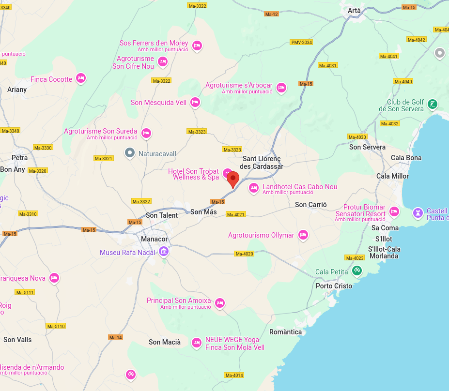

Descripció
La basílica de Son Peretó fou un edifici destinat al culte paleocristià situat a la possessió de Son Peretó, actualment se'n conserven algunes parts i s'està procedint a la seva neteja i estudi.
Ubicació
Es troba entre les localitats mallorquines de Manacor i Sant Llorenç des Cardassar.

Imatges